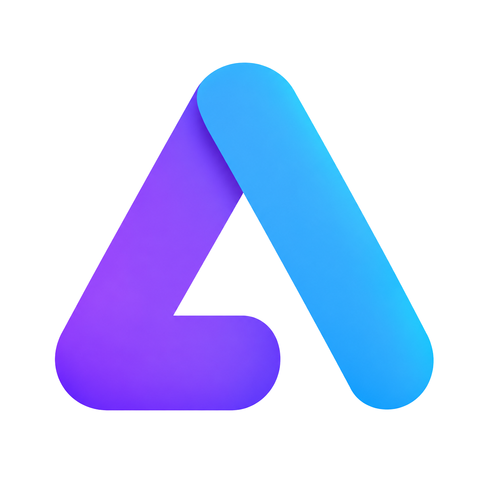

Dashboard AI Terpadu
Lihat dan buka berbagai tools AI dari satu layar utama yang rapi, cepat, dan nyaman.

AI StationAI Tools Hub untuk Android
Akses ChatGPT, Claude, Gemini, Grok, Perplexity, dan tools AI lain dari satu dashboard elegan. Pilih tool, buka website resminya, lalu lanjutkan pekerjaanmu tanpa ribet.


Launcher independen untuk membuka website AI tools resmi.
Masalah
Setiap tool AI punya kekuatan masing-masing. Tapi saat semuanya tersebar di browser, bookmark, dan shortcut terpisah, pekerjaan jadi kurang rapi. AI Station menyatukannya dalam satu dashboard yang cepat dibuka.
Fitur Unggulan
Bingung harus memakai ChatGPT, Claude, atau Gemini? Cukup ceritakan tugas atau masalah yang sedang kamu hadapi. Fitur cerdas AI Finder akan otomatis menganalisis kebutuhanmu dan memberikan rekomendasi layanan AI mana yang paling cocok—langsung siap digunakan dengan satu ketukan.
Simulasi AI Finder
"Saya ingin memperbaiki bug pada kode aplikasi yang error..."
Gunakan Claude 3.5 Sonnet
Sangat jago untuk analisis kode kompleks.
Fitur Utama
Dibuat untuk pengguna yang sering berpindah antara chat, riset, penulisan, coding, pencarian, dan eksplorasi ide.
Lihat dan buka berbagai tools AI dari satu layar utama yang rapi, cepat, dan nyaman.
Buka tool di dalam aplikasi atau gunakan browser aman untuk provider yang lebih kompatibel.
Simpan tool yang sering dipakai dan akses kembali tool terakhir dibuka dengan cepat.
AI Station tidak membaca isi chat, prompt, jawaban AI, atau password provider.
Cek versi terbaru, baca release notes, unduh APK, dan pasang pembaruan langsung.
Ceritakan tugas atau masalahmu, AI Station akan langsung merekomendasikan tool yang paling pas untuk digunakan.
Tampilan Aplikasi
Mockup iPhone dan Samsung membantu pengunjung website melihat kesan aplikasi dengan lebih jelas sebelum mengunduh.
Tampilan bersih untuk kebutuhan promosi dan hero website.
Menunjukkan pengalaman AI Station sebagai aplikasi Android.
Privasi
AI Station tidak meminta akun khusus untuk menggunakan aplikasi. Saat sebuah tool membutuhkan login, proses login berlangsung langsung di website resmi tool tersebut. Aplikasi tidak menyimpan password provider dan tidak membaca isi percakapan AI.
Update
AI Station dapat memeriksa pembaruan dari aplikasi. Jika versi baru tersedia, pengguna dapat membaca catatan perubahan, mengunduh APK, dan melanjutkan instalasi.
FAQ
Tidak. AI Station adalah launcher untuk membuka website resmi berbagai AI tools.
Tidak. Aplikasi pengguna tidak membutuhkan login khusus ke AI Station.
Tidak. Aplikasi tidak membaca prompt, jawaban, atau isi percakapan di dalam WebView.
Beberapa provider membatasi login atau fitur tertentu di embedded WebView. Browser Aman dipakai agar login dan akses lebih kompatibel.
Tidak, kecuali dinyatakan resmi. AI Station adalah launcher independen untuk membuka layanan pihak ketiga.
Satu aplikasi untuk membuka banyak tools AI favorit dari dashboard yang rapi, elegan, dan praktis.
Download APK (v2.1.6)